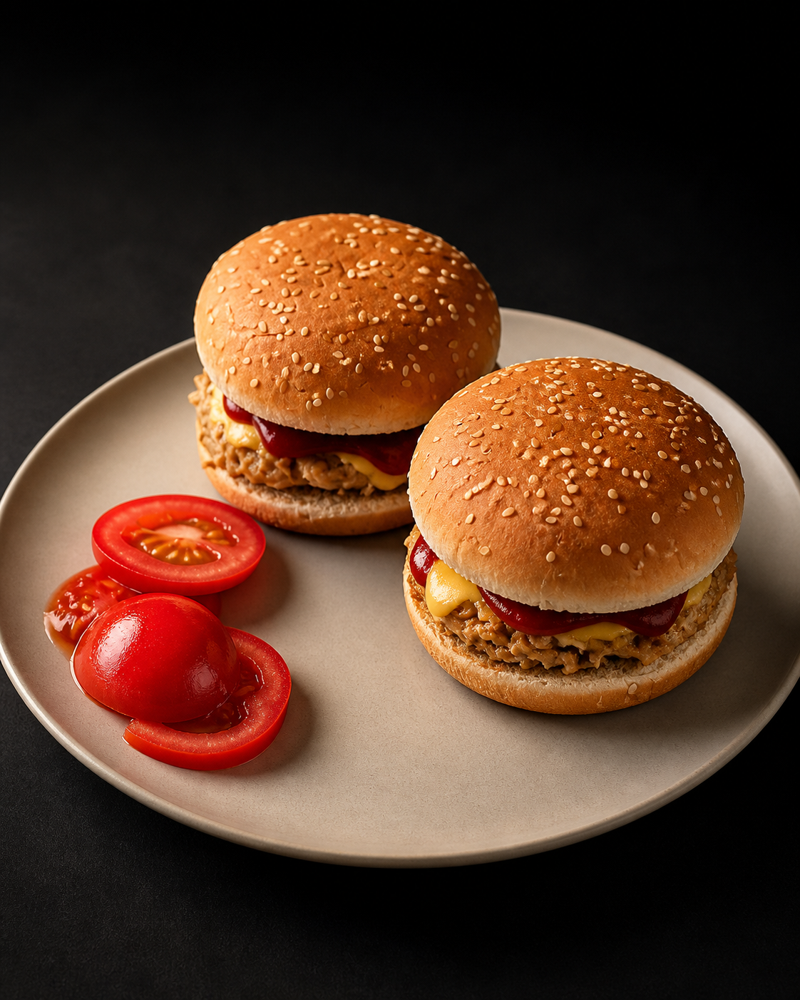

Deux Hamburgers au poulet

Ingrédients
- 200g de haché de poulet
- 2 tranches de cheddar
- 2 pains à hamburger
- 1 tomate
- 30g de ketchup
Préparation
- Diviser le haché de poulet en 2 portions de 100g chacune
- Faire cuire les 2 galettes de poulet à la poêle
- À la fin de la cuisson, poser une tranche de cheddar sur chaque galette
- Recouvrir la poêle avec un couvercle pour laisser fondre le fromage (2-3 min)
- Pendant ce temps, couper la tomate en rondelles
- Passer les pains à hamburger dans un grille-pain
- Assembler : poser la galette de poulet avec le cheddar fondu sur la base du pain
- Ajouter les rondelles de tomate
- Ajouter 15g de ketchup sur chaque hamburger
- Fermer avec le dessus du pain
Valeurs nutritionnelles (approx.)
Par portion : 762 kcal • 56 g protéines • 28 g lipides • 68 g glucides • 5 g fibres